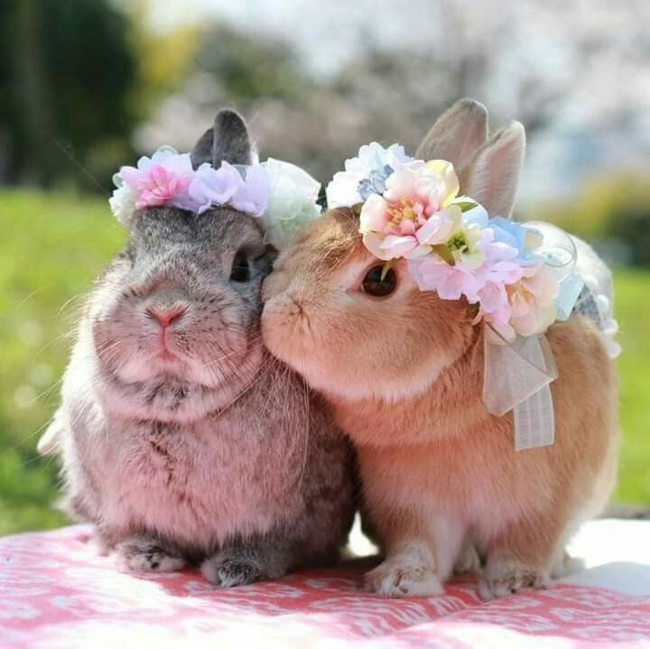

Здравствуйте, это моя первая страница.
Добро пожаловать! :)
Колики. Кролики отличаются от зайцев альтрициальностью (термин восходит к лат. altrīx, īcis
f. [altor] кормилица, воспитательница, также как термин «альтрициальный», англ. altricial —
незрелорождающийся, — применяемый, в частности, к гнездовым птицам и к таким млекопитающим, как крысы,
медведи и т. п.) — их детёныши рождаются слепыми, лишёнными мехового покрова, растут в норах.
Зайцы,
напротив, — прекоциалы: зайчата появляются на свет покрытыми шерстью, с открытыми глазами.
